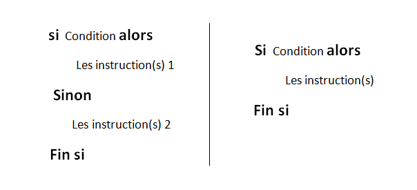
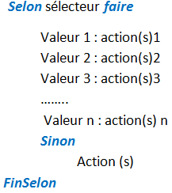

- Introduction:
- La structure Si alors ……… sinon …… fin si ou Si alors ……… fin si
- Structure à choix multiples
Contrairement au traitement séquentiel, la structure alternative ou conditionnelle permet d’exécuter ou non une série d’instructions selon la valeur d’une condition.
Une condition est une expression logique ou une variable logique évaluée à Vrai ou faux. La condition est évaluée. Si elle est vraie, la série d’instruction(s)1 est exécutée et l’ensemble d’instruction(s) 2 est ignoré, la machine sautera directement à la première instruction située après Fin si. De même, au cas où la condition était fausse la machine saute directement à la première ligne située après le Sinon et exécute l’ensemble d’instruction2.
Cette structure conditionnelle permet de choisir le traitement à effectuer en fonction de la valeur ou de l’intervalle de valeurs d’une variable o d’une expression.
